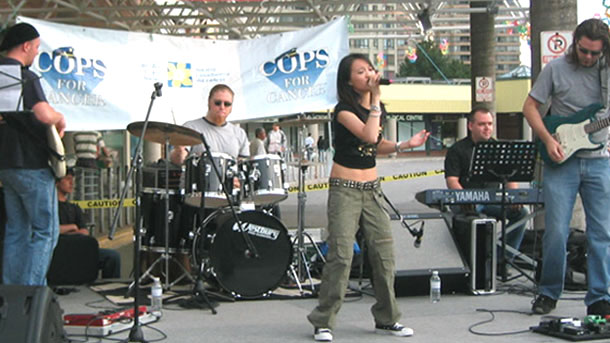
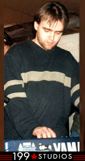
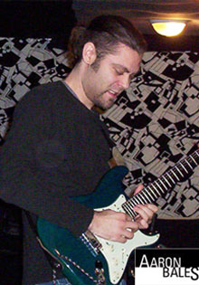
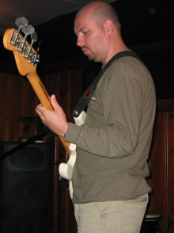
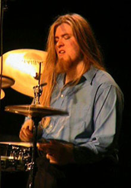

《原來你什麼都不想要》 Demo Song of Jing Lu and her Music Band. Lead Singer: Jing Lu; Band Leader and Keyboard: Cory Noziglia; Guitarist: Aaron Bales; Bass: Michael Goutman; Drummer: Aaron Spink. See member profile below:
Band Leader and Keyboard: Cory Noziglia

Cory Noziglia is very well known throughout Toronto's music industry and has worked with many of the local musicians on a large variety of different projects. He is the proprietor of 199 Studios and has been the leader and organizer of a wide range of musical projects for many years. Since childhood Cory has been studying many aspects of music from various teachers, excelled in music throughout high school and progressed to study Music and Computer Science at York University. He is an experienced sound engineer and a producer for many artists, including Jing Lu. He teaches several instruments, has been a session musician on many albums, and regularly performs with bands.
Guitarist: Aaron Bales

Aaron Bales is a renowned guitarist, composer and music teacher. Beginning as a student of rock music during his early teens, Aaron eventually progressed to classical study in high school where he received accolades in many Ontario music festivals as a classical guitarist. His post-secondary studies took him to Humber College, a prestigious environment focused on jazz and fusion styles. Aaron graduated with honours majoring in arranging and performance. He later continued his education with private study in composition at The Royal Conservatory of Music in Toronto. Currently Aaron provides services in composition for Film/Television/Video Games, handles dozens of students on a weekly basis and regularly performs with a variety of musicians. Aaron's rich educational background and professional experience makes him an extremely entertaining and versatile musician.Bass: Michael Goutman

Born in St. Petersburg Russia, Michael Goutman began his musical career as a classical pianist at the age of six. During his ten years of classical training he played at various concert halls in St. Petersburg and Moscow. It was later at the age of sixteen that Michael started playing guitar and soon enough joined and performed with a variety of bands playing mostly Art Rock and Fusion in different venues across Russia and Europe. Later, Mike moved to Toronto, Canada and started playing electric bass. In addition to Jing Lu's band, Michael is currently a member of other Toronto bands called Griboyedov Dreams, Mesha's Brew and Raskolnikoffs with who he enjoys playing in a variety of styles including Electronic, Folk, Fusion, Jazz and more!Drummer: Aaron Spink

A young up and coming drummer on the Toronto music scene, Aaron Spink has already gained a wealth of experience and a rich foundation of education in his field. Only 23, Aaron started playing drums at the age of 11 and accumulated much of his drumming knowledge through elementary and high school music programs. From there, Aaron proceeded to not only perform with many bands in the GTA but was also a 4 time member of the Durham Honour Bands. Aaron then attended 4 years at Humber College in Toronto where he not only studied with highly acclaimed drummers Mark Kelso and Paul DeLong but also had the great honour to perform behind such top musicians as Randy Brecker, Steve Gadd and Gord Sheard. Aaron, who just finished his tenure at Humber in April of 2007, plays a wide spectrum of styles inlcuding jazz, fusion, rock, latin and pop and also serves as a private educator of the drums. In addition, Aaron has spent some time performing on the jazz and pop scenes in San Diego, California and currently performs and records with numerous other acts around the GTA and other parts of Ontario.